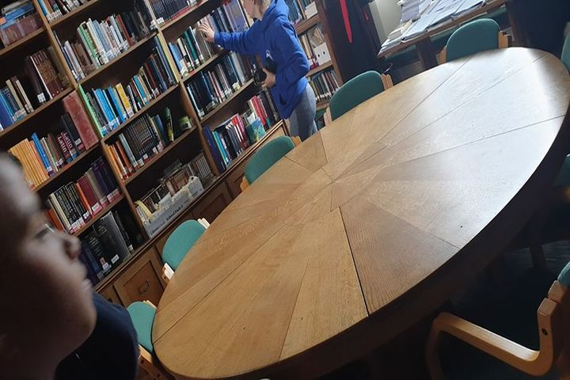
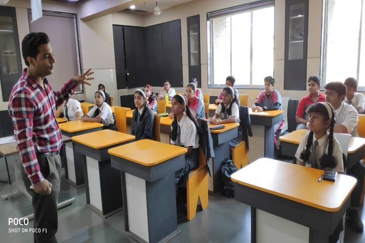

This school is full of joy and knowledge with balanced amount of skill developement activities.
The school was established in 1985. Omkar International School is a Co-ed school affiliated to Central Board of Secondary Education (CBSE), Council for Indian School Certificate Examinations (CISCE) & Cambridge Assessment International Education (CAIE). It is managed by Omkar Educational Trust.
this school has 4 boards.
-CBSE
-ICSE
-SSC
-Cabridge

School Library

School Classrooms

School Grounds